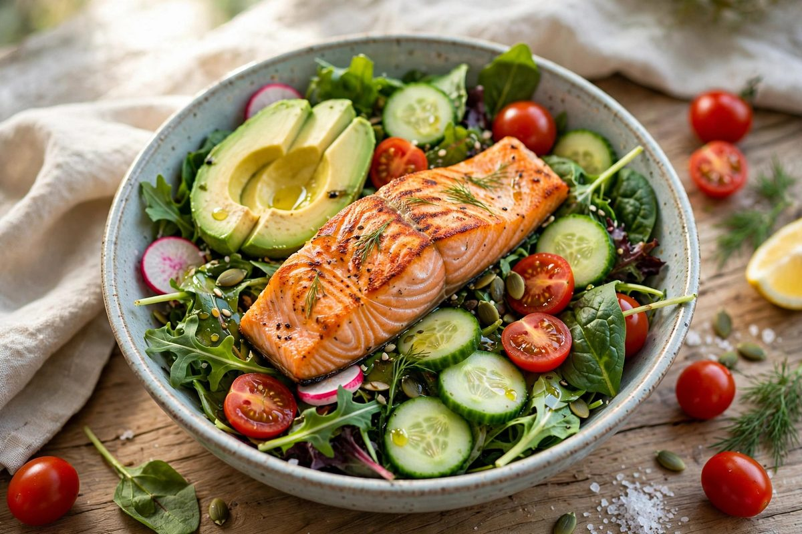

Home » Guides
Keto Lunch Ideas

Lunch is where many keto diets fail, because it is the meal most often eaten away from home, in a hurry, or without a plan. This guide gives you practical lunch ideas that are quick to make, easy to carry, and genuinely satisfying, so you can stay on track whether you are at your desk, at home, or travelling.
Salads that actually fill you up
A keto salad needs protein, fat, and plenty of vegetables to be satisfying. Start with leafy greens, add grilled chicken, tuna, boiled eggs, or cheese, then add avocado, olives, nuts, and a generous olive oil dressing. A Cobb salad with chicken, egg, bacon, avocado, and blue cheese is a classic for a reason. A Greek salad with feta, cucumber, tomato, and olives is quick and refreshing. Make the dressing yourself — olive oil, lemon juice, mustard, and herbs — because shop-bought dressings often hide sugar. Pack the dressing separately so the salad stays crisp.
Wraps, bowls, and leftovers
Lettuce wraps are the keto answer to sandwiches: fill large lettuce or cabbage leaves with seasoned mince, chicken, or tuna salad. Low-carb wraps made from almond flour or cheese are another option, and they hold together better than lettuce. Bowls work well too — cauliflower rice topped with grilled meat, vegetables, and a creamy sauce is a complete lunch in one container. The easiest keto lunch of all is last night's dinner, reheated. Cook extra at dinner and pack the leftovers in a container before you sit down to eat, so lunch is already decided.
Keto soups for lunch
Soup is one of the best keto lunches because it is easy to batch-cook and reheat. Cream of broccoli soup, made with broccoli, cream, cheese, and stock, is rich and filling. A chicken and vegetable soup with courgette instead of noodles is warming and light. Cauliflower soup with bacon and cheddar tastes indulgent but stays low in carbs. Make a large pot on Sunday, freeze it in single portions, and defrost one each morning. Serve with a side salad or a slice of keto bread for a complete meal.
Lunch on the go
When you are out and about, a little planning goes a long way. Keep a small lunch kit at work: tinned tuna, a jar of olives, nuts, cheese, and a bottle of olive oil. Many cafes will serve a burger without the bun, a salad with grilled chicken, or an omelette, so do not be afraid to ask for changes. At a sandwich shop, choose a salad box instead of a sandwich. If you are caught without a plan, a supermarket rotisserie chicken with a bag of salad is a perfectly good keto lunch. The key is having a default option you can rely on.
Packing lunch the night before
The single best habit for keto lunches is packing them the night before. After dinner, put leftovers straight into a lunch container, add a salad or some vegetables, and put the box in the fridge. In the morning, you only need to grab it and go, with no decisions to make when you are half asleep. Keep a few shelf-stable backups at work — tinned tuna, nuts, and a jar of olives — for days when you forget. A small cool bag with an ice pack keeps food fresh until lunchtime, and a reusable container is better than disposable packaging. This one habit removes the daily question of what to eat for lunch, and it is the reason many people stay on keto for months without struggling.
Frequently Asked Questions
What is the easiest keto lunch for work?
Leftovers from dinner, packed the night before. A chicken salad with avocado and olive oil dressing is another reliable choice that needs no reheating.
Can I eat out for lunch on keto?
Yes. Order grilled meat or fish with salad or vegetables instead of bread, rice, or chips, and ask for sauces on the side so you can check them.
Are shop-bought salads keto-friendly?
Some are, but many contain sweet dressings, croutons, or sweetcorn. Check the label for sugar and carbs, or choose a plain salad and add your own dressing.